DreamX：把视频世界模型变成动作的“压缩器”，再让机器人预测这份压缩表示
Jisoo Kim 等 · KAIST / NVIDIA。精读 DreamX: Video Diffusion Model is a Universal Latent Action Learner，arXiv:2611.05377v1，2026 年 11 月 3 日，25 页；整理于 2026 年 11 月 9 日。论文 PDF · HTML 全文 · 官方项目页
假设我们有一段人把抽屉推回去的视频，也有机器人关抽屉的示范。两者都包含“靠近把手、接触、向内推”的过程，但人的手指和机器人的关节无法逐维对应。直接学习未来图像，又要同时预测柜子的纹理、灯光和手臂外观：这些信息对生成视频有用，对决定下一步动作未必同样重要。
DreamX 的办法是先学一个中间表示：让少量 token 从示范视频中提取运动信息，再要求它们配合初始画面重建未来。 初始画面负责提供场景和外观，紧凑表示承载解释变化所需的信息。等这份表示学好后，再训练策略从当前观测和指令预测它，并把它交给动作头。人类视频由此获得了一个无需关节标签的训练目标。
这篇最值得读的地方，是它把“用视频模型理解运动”和“部署时生成未来视频”拆开了。下面沿着关抽屉的样本，走通表示提取、压缩、策略训练和执行。需要先记住两个数字的口径：300 倍指每个潜在视频帧的 token 数压缩；96.7% 是关抽屉的子目标平均得分。 它们分别不是端到端加速倍数和整次任务完全成功率。
一、模型结构与方法定位：先从发生过的动作中学表示
1.1 三条路径，分别需要哪些信息？
论文建立在 Cosmos-Predict2.5 2B 上。视频首先经 VAE 压到潜在空间；这里的“潜在帧”不是原始 RGB 帧。VAE 的因果设计使初始潜在帧 V₀ 只依赖初始图像，因而可以独立作为条件。随后，视频扩散 Transformer 的时空表征被用于提取运动。§3.1–3.4，PDF p.3–6
训练和使用时有三条不同路径：
| 路径 | 已经拿到的内容 | 模型输出 | 对应用途 |
|---|---|---|---|
| 离线表示学习 | 完整示范视频、文字；有时还有机器人动作 | 潜在动作 Q，并以重建监督它 | 从人类与机器人视频学共同表示 |
| 示范迁移 | 完整源视频提取的 Q，目标初始画面或机器人初始状态 | 目标视频或机器人动作 | 把已观察到的运动迁移到新主体 |
| 策略执行 | 当前观测、指令、本体状态 | 预测的紧凑潜在动作与控制动作 | 没有未来示范可看的机器人策略 |
对于关抽屉，第一条路径可以看完整段“手靠近→接触→抽屉关闭”，因为它在制作标签。第三条路径只能看此刻的抽屉和指令，由策略预测接下来怎样变化。训练标签使用未来是合法监督；把标签提取器当作在线因果历史编码器，则会弄错信息条件。
1.2 为什么用视频模型同时做编码器与解码器？
从图 2 左边读起：视频 token 后追加可学习 query，编码器将它们变成潜在动作 Q；右边解码器用 Q 和首帧重建视频，有动作标签时还重建动作。两个模块从相同预训练骨干初始化，但使用各自的 LoRA 适配参数。
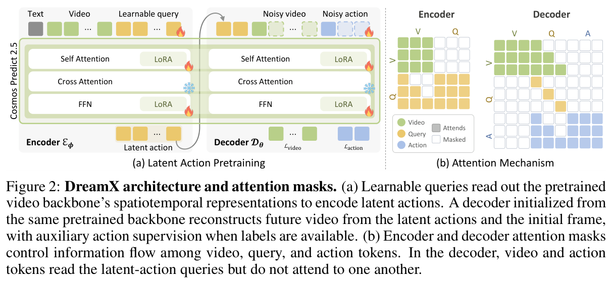
这里的 latent action 不是某个固定含义的“向左 2 cm”离散按钮，也不是机器人关节向量。它是一组通过重建任务学出来的连续特征。视频模型预训练时已经学过大量时空变化，DreamX 尝试把这些先验读出来，而不是从随机初始化开始学习什么是手、接触和物体运动。
但只把视频编码成特征，仍可能保留主体外观。作者的进一步操作是：解码器拿到首帧，却拿不到文字指令。 对于同一个半开的抽屉，究竟继续打开还是关闭，解码器必须从 Q 中得到额外依据。首帧和生成先验又承担了相当一部分外观重建，让有限的 Q 更值得用于描述变化。这是信息分工上的诱导，不是保证动作与外观完全解耦的数学证明。
二、核心机制：压缩什么、遮住什么，才会得到可用的动作表示？
2.1 四个 query 怎样读一帧的运动？
每个 VAE 潜在帧原本有 1,200 个空间 token，作者为它分配 K=4 个可学习 query。对 N 个潜在帧，输出 Q 可以记为 N×4×D，骨干宽度 D=2,048。全部 query 组在一次前向中一起提取，而不是逐帧调用一次模型。
编码器的直接 query→video 注意力是按帧因果的：第 g 组读取 V₀ 到 Vg；文字仍通过原骨干的 cross-attention 输入。query→query 则不受这个前缀限制。这让不同组交流运动信息，但也带来一个很具体的实现边界：不能只看到“frame-causal”就宣称整个 Qg 严格不含未来。 较晚 query 可以读取较晚帧，再经多层 query 交互影响较早 query。图 2 中视频 token 自身的时空混合也不是一张全局三角因果图。
这不妨碍论文的离线示范编码用途。若要把它改成只读过去的实时记忆，就必须重新检查所有可达的信息路径，并重新训练相应 mask；论文没有提供这种在线改造。它因此不能直接替代 MEM 的历史视觉编码器。
“1,200→4”给出的是每个潜在帧 300 倍的 token 数减少。提取 Q 时，原视频仍需要经过大骨干；token 的宽度、VAE 编码成本、解码和去噪次数也仍然存在。把这个比例写成整个机器人快 300 倍，会把表示长度和执行耗时混为一谈。
2.2 解码器怎样迫使 Q 承担运动信息？
图 2 右侧的 mask 是另一项关键设计。Q 在解码器中只作条件，不读取其他 token；视频帧 Vt 读取 Q 的前缀 Q₀:t，动作块 Am 读取 Q₀:m。视频流与动作流互不读取对方。
对机器人关抽屉样本，视频分支要恢复手臂和抽屉的变化，动作分支要恢复执行这段示范所需的动作。两种监督都经过 Q，促进 Q 同时具备视觉变化与控制相关的信息。禁止动作流读取视频流，则避免它直接从重建分支的未来视觉 token 绕过 Q。
这里仍要分清训练对象：编码器本来就看了示范视频，所以 Q 带有示范未来信息；这一阶段是学习一种有用的标签表示，不能用它的动作重建误差声称“只看当前就能预测得这么准”。后面的策略生成器才负责跨过这个信息缺口。
2.3 flow matching 的监督具体更新了谁？
Flow matching 可以理解为教网络把带噪样本沿正确方向还原。对干净目标 x 与高斯噪声 ε，论文采用线性插值；τ 是噪声时间，不是机器人执行时间。用统一记号写成：
xτ = (1 − τ) x + τ ε
目标速度 u = ε − x
Lvideo = E ||vvideo(xτ, τ; V₀, Q) − uvideo||²
L = Lvideo + λ Laction
有动作标签：λ = 1；没有动作标签：λ = 0
视频目标在 VAE 潜在空间，动作目标是对应的动作序列。对一段无关节标签的人类视频，视频损失仍能沿“解码器→Q→编码器”反向传播；它不是只能参与视觉特征初始化。对有动作的机器人视频，动作损失也通过共享的 Q 训练动作相关表示。§3.2；附录 A.2
论文说 encoder 与 decoder 端到端训练，但附录明确预训练骨干权重冻结，更新的是独立 rank-16 LoRA、query 及其余可训练适配参数。“梯度通过网络传递”和“所有骨干权重都更新”是两回事。两项损失等权也不等于数值贡献完全相等：视频与动作维数不同，论文未充分给出逐维归约、有效动作维 mask 等代码级规则，复现时不能只抄 λ=1 就认为配方齐了。
2.4 为什么还要把 2,048 维压成 32 维？
Q 虽然 token 少，每个 token 仍有 2,048 维。如果下游策略直接预测这样的目标，输出空间依然很大。作者增加变分特征自编码器 FAE：冻结 DreamX 编码器，用一个 self-attention block 把每个 Q token 编成 32 维分布参数，再用六层 Transformer 解码回原特征。token 的数量与布局不变。附录 A.3，PDF p.14–15
μ, log σ² = fψ(Q)
训练时：Z = μ + σ ⊙ ε
Q̂ = gψ(Z)
LFAE = ||Q̂ − Q||² + 0.01 × KL(qψ(Z|Q) || N(0,I))
制标签时：Z = μ(Q)，使用确定性均值
重建项在固定归一化后的特征空间计算，要求压缩码保留 Q 的信息；KL 项约束分布，避免编码任意发散。训练时只有瓶颈编码器与解码器更新，完成后一起冻结。用均值作标签，则同一视频不会因为每次重参数采样而产生额外的随机监督差异。
最长片段的 Q 从 32×2,048 变成 Z 的 32×32，这是每 token 通道维度的 64 倍压缩，与前面的 300 倍 token 压缩是两个步骤。 压缩不是无损操作：表 1 中回归 MSE 从 0.17 变为 0.22，分类准确率从 69.67% 降至 67.15%。作者选择的是较小预测目标与表征精度之间的折中。
三、训练与推理：完整视频标签怎样变成当前观测下的策略？
3.1 三阶段训练，各自优化什么？
图 3 左边是拿已有示范做迁移；右边才是策略路线。先看右边的压缩器，再看由当前观测和文字生成紧凑码的模型，最后是独立的 Action DiT。DiT 在这里是用扩散 Transformer 预测连续动作的头。
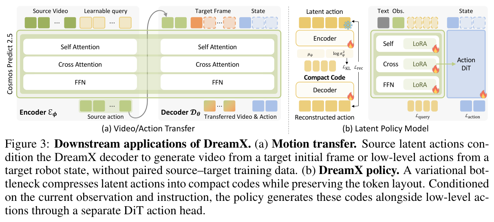
训练可以按下表实现为三类不同任务；不能把它们的步数、学习率和可训练参数混成同一配置。
| 阶段 | 目标与梯度 | 论文配置 |
|---|---|---|
| DreamX 表示预训练 | 从视频提取 Q，以视频/动作重建训练编码器和解码器的适配参数 | Cosmos-Predict2.5 2B；480×640；78,000 步；分别 rank-16 LoRA；LoRA/query 学习率 1e−4，其余可训练参数 5e−5；warmup 500 |
| FAE 压缩 | 冻结 DreamX；训练 Q→Z→Q̂ | 50,000 步；1e−4；warmup 500；KL 权重 0.01；2,048→32 维 |
| 紧凑码生成器预训练 | 以冻结编码器和 FAE 的输出为目标，从当前观测与指令预测 Z | 约原数据三分之一；100,000 步；2 张 H200；global batch 60；1e−4；warmup 1,000；rank-128 LoRA 与输入/输出投影 |
第三阶段的 LoRA 位于 self-attention、cross-attention 和 FFN。Action DiT 没有在这一步单独预训练，而是在任务特定策略学习时加入，与生成器共同训练。关抽屉对照中，DreamX 与 Mimic-Video 都做 30,000 步任务训练；这不意味着二者此前的预训练数据、模型先验和预算完全相同。附录 A.4、B.3
3.2 2.19k 小时数据怎样进入模型？
图 9 的扇区是视频时长，暖色是人类示范。人类视频让模型看到机器人采集之外的行为，机器人视频则同时建立与控制量的联系。
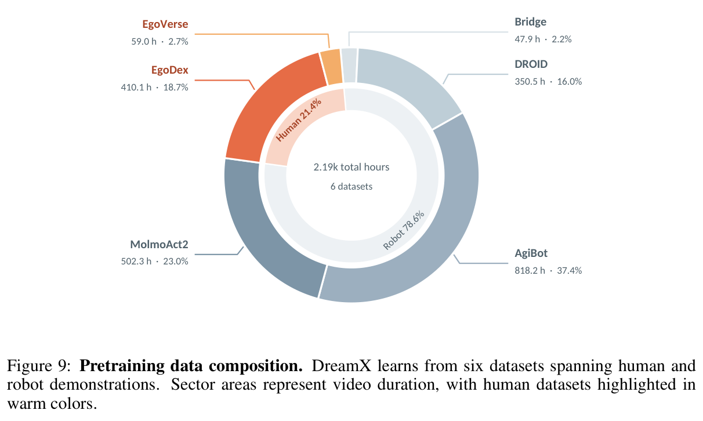
人类来源是 EgoVerse 59.0 小时、EgoDex 410.1 小时，合计约 469 小时、21.4%；机器人来源是 Bridge 47.9、DROID 350.5、AgiBot 818.2、MolmoAct2 双臂数据 502.3 小时。图中逐项相加为 2,188 小时，正文取约数 2.19k。这不是十万小时级训练，也不意味着人类与机器人按 21.4:78.6 的概率抽 batch：时长占比与训练采样概率是不同口径，后者未完整公开。
每个训练 clip 取 5–29 个 RGB 帧，按 4 帧递增，变成 2–8 个 VAE 潜在帧，因此最多 32 个 query。论文披露了帧数，但没有给出足够完整的跨来源物理帧率、重采样与时间戳对齐规则。29 帧可能代表不同秒数，不能据此补写固定预测时长。对于采样频率不同的数据，统一物理时域仍需工程设计，DreamX 本身没有给出完整解决方案。
3.3 人类视频没有动作标签，究竟训练了策略的什么能力？
以“人关闭上层抽屉”为例：完整视频经冻结的 E 和 FAE 得到 Z_target；训练输入只保留当前观测与指令，生成器通过潜在码 flow matching 学习接近 Z_target。如果这是一段机器人视频，另有动作 A_target，动作头还受到动作 flow matching 监督。策略损失可以记为 Llatent + λLaction，无动作时 λ=0。
动作头读取生成器中的潜在动作特征，以及观测、指令、本体状态条件；信息方向是动作读取潜在表示，潜在生成不读取动作 token。这一方向让无动作标签视频也能训练生成器，而不要求为人的关节伪造机器人标签。机器人数据负责学习“这样的潜在变化应该怎样在本体上执行”。
这提供了混合数据的一种明确分工：人类数据扩大可学习的变化模式，机器人数据提供控制映射。但它没有自动解决动作标签噪声、机器人动力学差异或接触精度。若无标签数据中的行为不在目标机器人的可达范围内，latent 预测得好也不保证能执行。论文的解决证据是特定任务中的迁移实验，并非一套显式可达性约束。
3.4 推理是否仍需要外挂世界模型？
部署策略时，当前观测和指令进入潜在生成器，生成紧凑码及相关特征；Action DiT 依赖这些特征和本体状态输出动作。不需要先解码一段未来 RGB 视频再提取特征，也不需要在线获取真实未来图像。 离线示范编码器和 FAE 解码器不承担部署时的未来标签生产。
不过，策略内部仍然有一个来自视频模型的潜在生成器。论文证明的是跳过完整视频生成的路线，并没有证明它能以一个轻量线性头替代所有世界模型计算。表 3 的 1,474 ms 是一次推理延迟，仍不能直接满足高频闭环每步等待；控制频率、每次消费的动作长度、扩散步数、异步调度和完整计时硬件条件，没有在本文配方中充分披露，不能把它读成 1/1.474 Hz 的真实机器人控制频率。
另一个用途——拿完整的人类视频做动作迁移——则使用冻结的原 DreamX 编解码器和初始本体状态，直接解码动作轨迹。附录明确该实验开环执行、没有视觉反馈。这与刚才的当前观测条件策略，是两个不同实验设置。
四、实验结果与附录细节：哪些证据真正支持这个接口？
4.1 压出来的是动作信息，还是普通视觉特征？
表 1 用冻结表示训练统一的探针：先投影到 768 维，经归一化、GELU、时间编码和可学习 query 池化，再做动作回归或分类。这样先检验表示是否易于读出动作信息，而不混入整套机器人策略的执行差异。
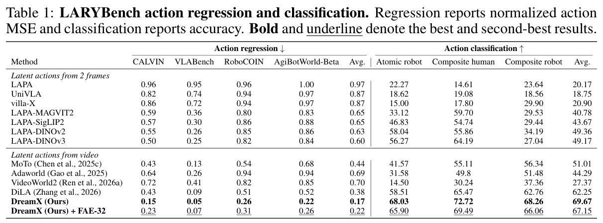
DreamX 平均归一化动作 MSE 为 0.17，DiLA 为 0.38；分类准确率 69.67%，DiLA 为 62.25%。FAE-32 压缩后仍保留相当信息，但指标有损失。这支持“Q 包含可读出的动作结构”，不能直接等同于闭环操作成功率。表中又区分两帧方法与视频方法：视频方法利用中间帧，时间信息预算并不完全相等。
动作标签对表示有多大帮助？作者在 MolmoAct2、EgoVerse、EgoDex 子集上另做表 4。注意这是子集实验，不可拿它的 0.23 与表 1 的 0.17 拼成单因素结论。
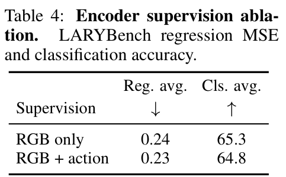
加入动作监督后，回归 0.24→0.23，分类 65.3→64.8，有升有降。它说明在这个设置中，仅视频重建也能学到相当强的表示；没有证明动作标签完全无用，更没有证明可执行动作解码器能在零机器人监督下凭空学会关节控制。
4.2 换一个主体，能不能保留运动？
图 5 的人类源视频是在抓红方块并拉向盘子；各方法拿到目标机器人的初始帧。关注后续画面中主体是否仍是机器人，以及对象是否沿示范的意图运动。
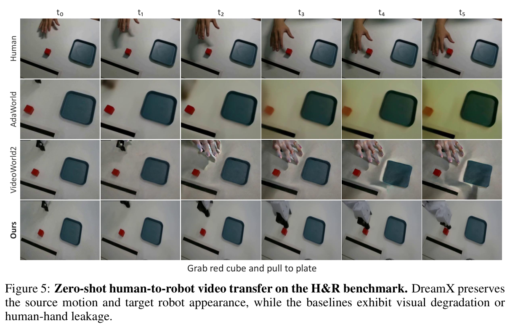
示例里，DreamX 保持机器人外观并生成相应动作，部分对照出现人手残留或视觉退化。这是一段定性例子，整体比较要看 H&R 上的 1,008 个 clip、21 个任务，每任务 48 个样本。
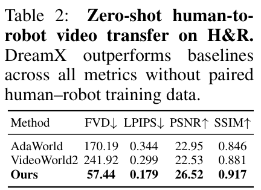
DreamX 的 FVD 为 57.44，AdaWorld 为 170.19，VideoWorld2 为 241.92；其余图像指标也较好。评估使用对应机器人录像的首帧作为条件，其余帧只作参考；统一保留输出前 20 帧，排除条件首帧后比较 19 帧。因此“无需成对训练”成立，不代表“评估没有对应参考”，也不代表视频指标已经证明真机接触成功。附录 B.5
动作迁移往前走了一步：把人的 Q 与机器人初始状态一起送入动作解码器。图 6 包括写字母 N、先向前再向左的单臂推动、双臂向前推动。
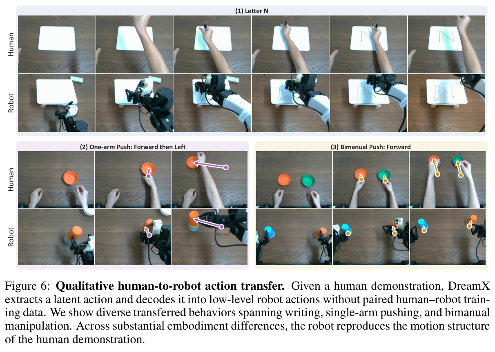
它说明表示在这些实例中可以跨主体传递轨迹结构，而不只是生成好看的机器人视频。但这些是定性、开环示例，没有覆盖丰富接触任务的系统成功率。这里的“无配对训练”也不能改写为“没有机器人数据预训练”。
4.3 关抽屉的 96.7%，到底成功了什么？
真机采用双臂 YAM、顶部 RealSense D405。动作是 14 维绝对命令：每臂六个关节位置加一个夹爪量。训练有 45 条示范，评估上层、下层、两层都打开三种配置，各 10 次；两层场景按先上后下处理。先看主表：
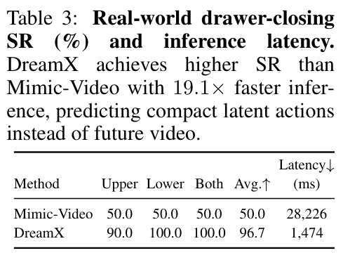
DreamX 平均 96.7，对照 Mimic-Video 为 50.0；延迟从 28,226 ms 降到 1,474 ms，约 19.1 倍。后一个数字是论文实际测出的系统延迟比，不能与前面的 300 倍 token 压缩混用。两个系统的预训练先验也不同，不能把全部得分提升单独归因于 token 变少。
关键计分定义藏在附录：到达与推闭两个子目标等权。表 5 把它拆开后，能看到两种系统的区别究竟发生在哪一步。
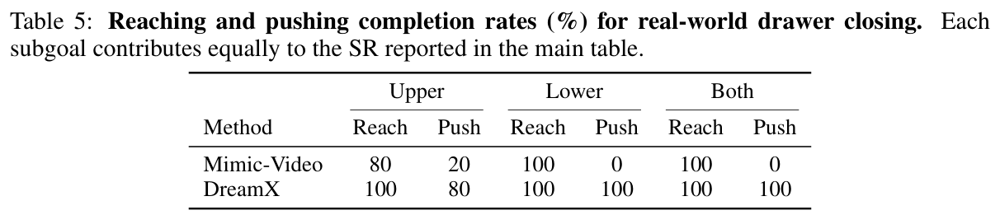
DreamX 上层到达 100%、推闭 80%，所以主表记 90%；下层与双层两项都是 100%，三种配置平均得到 96.7%。Mimic-Video 经常能到达，却没能推闭，因此虽然主表是 50%，并不表示一半完整任务成功。
若按表 5 的最终 Push 列对三种配置等权平均，DreamX 是 (80+100+100)/3≈93.3%。这是本文根据附录计算的最终推闭完成口径，不是作者主表的原指标。小规模每配置 10 次的实验也不足以证明对任意抽屉、物体和场景都同样稳定。
4.4 无动作的人类数据，真的帮到策略了吗？
表 6 把“仅关闭上层”的训练示范换成人类视频，没有该配置的低层动作标签，但下层和双层配置仍保留机器人示范。人类片段用潜在动作预测损失训练。
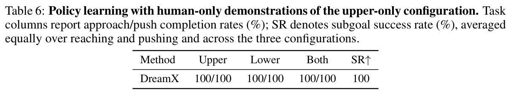
这一设置下各配置的到达/推闭均为 100/100，说明共享潜在空间能够在相关任务间传递监督。它不是“整个系统只看人类视频就能控制机器人”：机器人预训练和其他配置的动作标签仍在，而且上层推闭也可能出现在双层配置的组合任务里。因此这是有相关机器人经验支持的配置迁移，不能夸大成完全未知技能的零样本执行。
动作头到底有没有用生成器的信息？CALVIN 的消融保持策略路线，阻止动作头读取潜在动作特征，看结果是否下降。
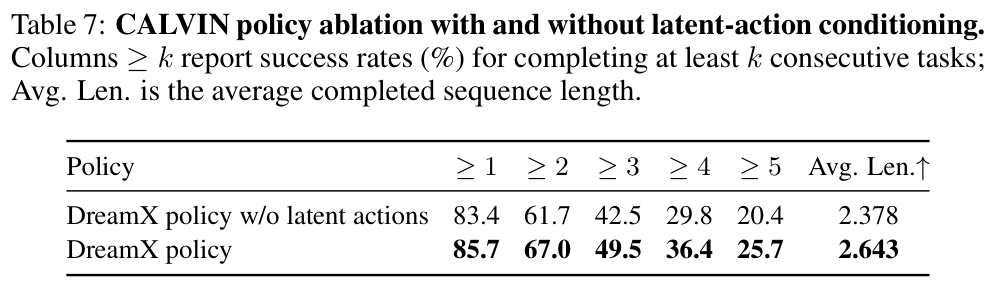
保留条件后平均连续完成长度从 2.378 到 2.643，连续五任务成功比例从 20.4% 到 25.7%。它比单纯展示潜在特征聚类更直接支持“这个接口有助于控制”。不过这是本文内部消融，不是对所有 VLA 的统一预算榜单，增益也不说明所有任务都需要同样大小的生成器。
4.5 Q 真在控制运动吗？
作者保持初始帧、解码噪声和调度相同，扰动 Q，比较重建结果。表 8 来自八个选取的高运动 clip、两个解码种子；运动比衡量相对运动量，flow deviation 衡量光流变化，RGB L1 则比较图像差异。
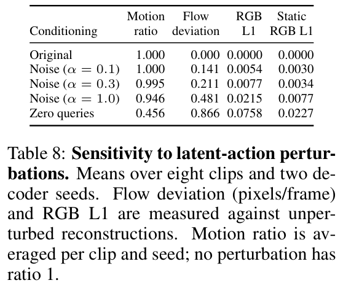
Q 置零后，运动比降至 0.456，光流偏差为 0.866；强噪声 α=1 时，运动比仍为 0.946，但光流偏差达到 0.481。这说明不只是运动“多少”，运动的方式也被 Q 改变。静态区域 RGB 变化较小，符合首帧更多承担外观、Q 更多控制动态的解释。
同时，置零并没有让运动完全消失，静态区域也没有完全不变。预训练视频先验仍在起作用，表示不具备已被证明的严格外观不变性。附录的注意力热图只能展示相关区域，t-SNE 图展示的是 2,362 个片段汇总后的 60 个、去除机器人均值的方向中心，也不能当作每条原始轨迹天然按动作聚类的证明。
总结：最值得迁移的，是动作导向的未来监督接口
DreamX 把视频预训练的动态知识，转成一个更适合策略预测的目标：先让少量 Q 解释示范未来，再压成 Z，最后让动作头使用从当前观测预测出来的潜在特征。它给“人类视频与机器人动作如何一起训练”提供了具体接口，也给“未来监督一定要生成 RGB 吗”提供了一个有实验支撑的替代路线。
对于混合 UMI 与真机数据，下面是迁移建议，不是论文已验证的配方。 可以先把 DreamX 思想用在离线未来标签上：视频窗口产生动作导向的 Z，策略从当前可见条件预测它；可信动作保留直接动作监督，无动作或暂不可对齐的样本只参与表示/潜在预测。可用的 UMI 动作不必全部丢弃，是否参与动作损失应按标定、时间同步和语义一致性决定。
这条路线不能自动修复带噪控制标签。先明确窗口的物理时长、当前/未来边界和 episode 划分，再比较“无未来目标、一般未来视觉特征、DreamX 式动作导向目标”三种训练。对照应尽量匹配数据和预算，除离线误差，还看未见场景、接触完成、动作延迟，以及阻断潜在条件后的变化。这样才能判断收益来自更好的表示，还是额外参数、算力和数据。
与目标图像条件相比，它把可视化目标压进潜在码，减少生成负担，却失去了直接查看目标 RGB 的直观接口；与历史记忆相比，它重点解决未来监督表示，不能补上过去发生了什么。历史编码器和潜在未来预测可以共存，但 DreamX 本文没有验证这样的组合，更没有验证它能直接替换 π0.7 的整套目标图像训练流程。
最后，公开信息还不足以逐项复现整个系统。论文给出了骨干、LoRA、帧数、压缩维度、主要步数与学习率；完整来源采样概率、动作对齐/归一化实现、损失归约、原始表示预训练算力、推理去噪步数与实时调度仍不充分。截至本次查阅，官方项目页代码入口标注 “Code (soon)”，未取得可核验的官方实现提交。 这些应作为原型设计时需要补齐的项目，不能包装成作者已经公开的配置。
来源与阅读材料
- 一手来源：DreamX v1 PDF、HTML、官方项目页。方法集中在 §3；数据与实现为附录 A；协议为 B；定量消融与扰动为 C。未运行模型训练、推理或复现成绩。
- 本文图表均裁自论文，归原作者所有；正文原创。章节组织与图文讲解节奏沿用本站既有方法，表达组织参考梦落花的 π0.7 解读，不将其作为 DreamX 技术事实来源。
- 可复查材料：正文 Markdown、来源映射、26 个编号图表的阅读清单。正文选用并逐张核验 13 个关键图表；其余对象在清单记录取舍理由。